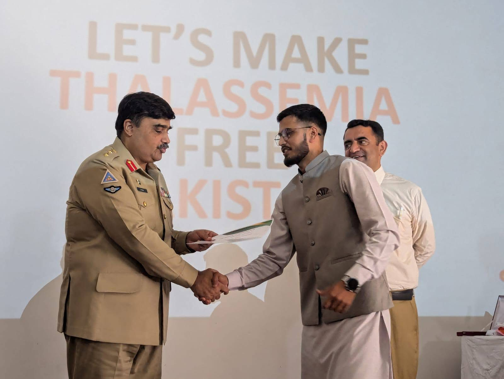
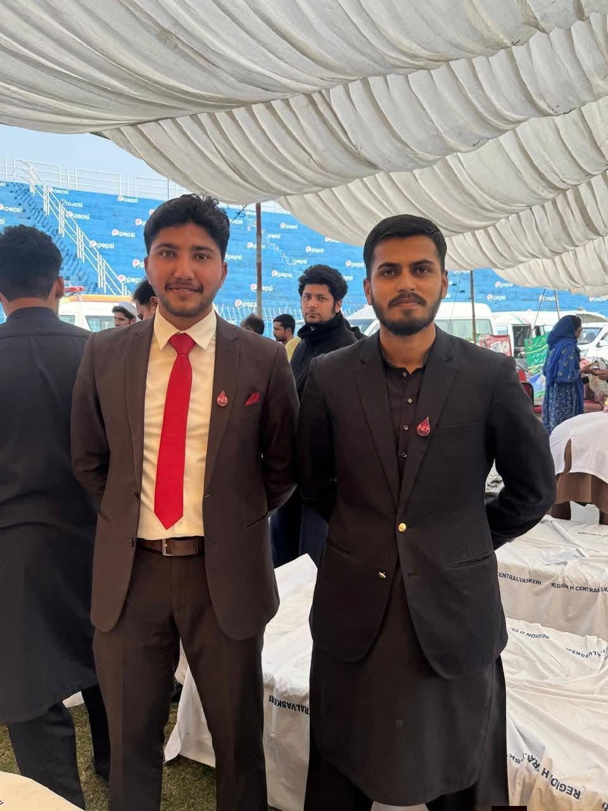
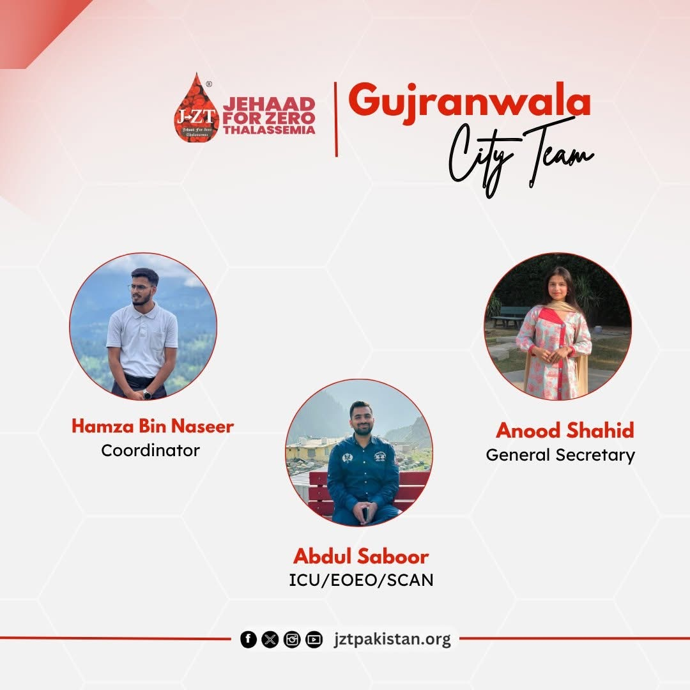
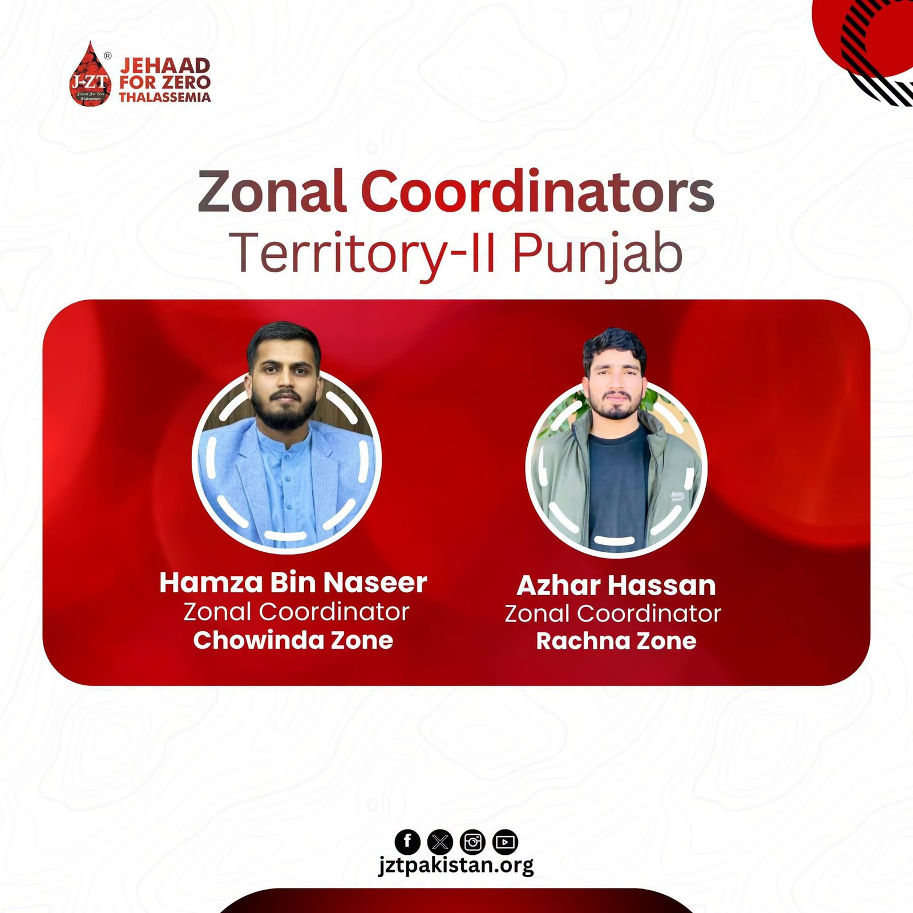
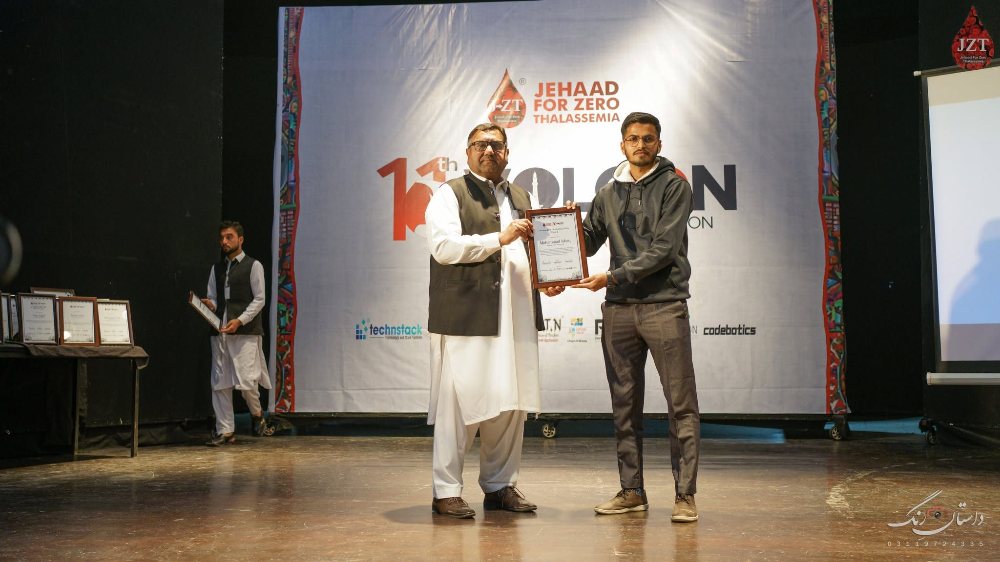

Compassion
People and patient dignity remain at the centre of every activity.
Social Work & Volunteer Leadership
Active volunteer at Jehad for Zero Thalassemia (JZT), contributing to thalassemia awareness, blood donation drives, student mobilization, volunteer training, patient support, and environmental sustainability initiatives to create a healthier future for the next generation.

Thalassemia children adopted & supported
Awareness sessions in educational institutions
National volunteer convention attendance
Nexus leadership training attendance
About me
I am passionate about community service, youth mobilisation and public-health awareness.
Through JZT, I have worked to support thalassemia children and their families by organising awareness sessions, blood donation campaigns, student induction trainings, volunteer activities and patient-support initiatives.
My goal is to collaborate with NGOs, educational institutions, and youth networks to create lasting social impact while contributing to climate action and building a healthier, more sustainable future for our planet.
People and patient dignity remain at the centre of every activity.
Inspiring volunteers and leading initiatives that create measurable impact.
Creating long-term social and environmental impact through responsible action.
Journey with JZT
Each role expanded my responsibility, institutional reach and ability to mobilise young volunteers.
Starting point (2023)


Current role (2026)

Major activities
I believe leadership is about serving others and creating opportunities for people to contribute to something greater than themselves. My journey has taken me from coordinating city-wide volunteer activities and organizing healthcare awareness campaigns to leading environmental plantation drives and collaborating with technology partners to digitize NGO operations. Every experience has strengthened my passion for building communities, empowering volunteers, and creating sustainable impact for future generations. Along the way, I have learned that lasting change is achieved through collaboration, consistency, and a shared vision.
Established and developed a JZT chapter at Postgraduate Islamia College, Gujranwala, UOC Gujrat and UVAS Norowal creating a student volunteer base for awareness and donor-support work.
Supported and deliveredsessions at FG Public School & College, GMC, Readers College and Postgraduate Islamia College and many other on prevention, screening and blood donation.
Mobilised donors and volunteers for blood collection efforts at Jinnah Stadium and Rachna College of Engineering and Technology.
Introduced students to JZT's mission, volunteer responsibilities and practical social-welfare work across four higher-education institutions.
Helped adopt approximately 13 children from Sundas Foundation and supported regular blood coordination and selected medicine expenses.
Engaged students from Khawaja Muhammad Safdar Medical College, University of Sialkot and UVAS Narowal for the JZT SWAP Internship.
Initiated and supported an MoU with Firm 11 for development of a mobile application designed to strengthen JZT's digital operations and mission toward a Thalassemia-Free Pakistan.
Training & recognition
National and zonal programmes helped strengthen my leadership, communication, teamwork and volunteer-management skills.

Four-day national-level programme attended twice; recognised as Best Performer.
Zonal leadership-development event held at Rachna College of Engineering and Technology.
Attended the national convention twice and received the Most Active Volunteer — Punjab 2 award.
Completed practical training in social work, communication, volunteer engagement and community service.
Completed the PIVOT Train the Trainer programme, enhancing my ability to facilitate training sessions and develop leadership skills in others.
Core capabilities
Certificates & recognition
These are some certificates, awards and recognition received through JZT training programmes, conventions, internships and volunteer activities.
Let's connect
I am open to collaboration with NGOs, welfare organisations, youth groups and social-impact initiatives working in healthcare, awareness, blood donation and community service.